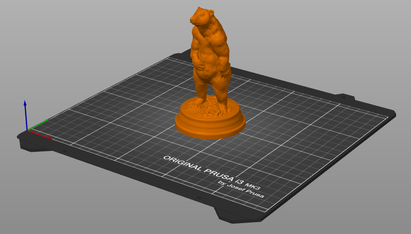
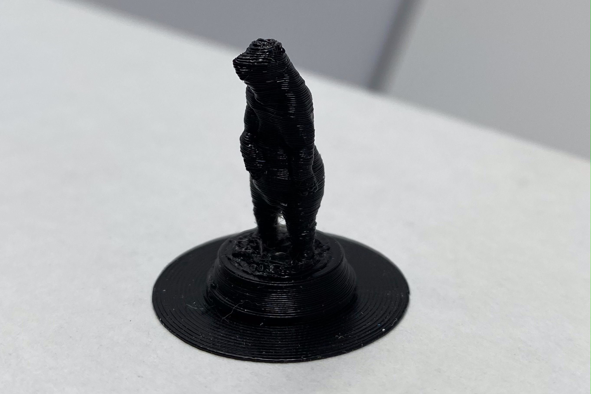

/week 5: 3D design & printing
# first attempt at 3d printing
# ---------------------------------
i have never tried 3d printing before. so as a first attempt, i decided to find a readymade stl design on thingiverse and try printing it on the prusa printer in the lab. my favorite animals are bears and so i found a design of a brown bear (ursus arctos). here is the stl file i used. i imported the design into prusaslicer and then scaled it down so it wouldn't take too long to print.

despite scaling the design down, the printing time was still extremely long. so i set the resolution at 0.20mm and was able to get the printing time down to 14 minutes. i exported the g-code to a flash drive, plugged it into the prusa printer and started the print. and here is what the print looked like!
